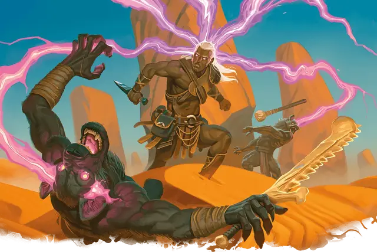

Психическая плеть Таши
Tasha's Mind Whip
2 уровень, Очарование

Время сотворения 1 действие
Дистанция 90 футов
Компоненты В
Длительность 1 раунд
Классы Волшебник, Чародей
Вы психически хлещете одно существо, которое видите в пределах дистанции. Цель должна совершить спасбросок Интеллекта. При провале цель получает 3к6 урона психической энергией и не может использовать реакцию до конца своего следующего хода. Кроме того, на своём следующем ходу цель должна выбрать, что она будет делать: передвигаться, совершать действие или совершать бонусное действие — цель может совершить лишь что-то одно. При успехе цель получает половину урона и не получает других эффектов заклинания.
На больших уровнях. Когда вы накладываете это заклинание, используя ячейку 3-го уровня или выше, вы можете нацелиться на одно дополнительное существо за каждый уровень ячейки выше второго. Все цели заклинания должны быть в пределах 30 футов друг от друга во время накладывания заклинания.